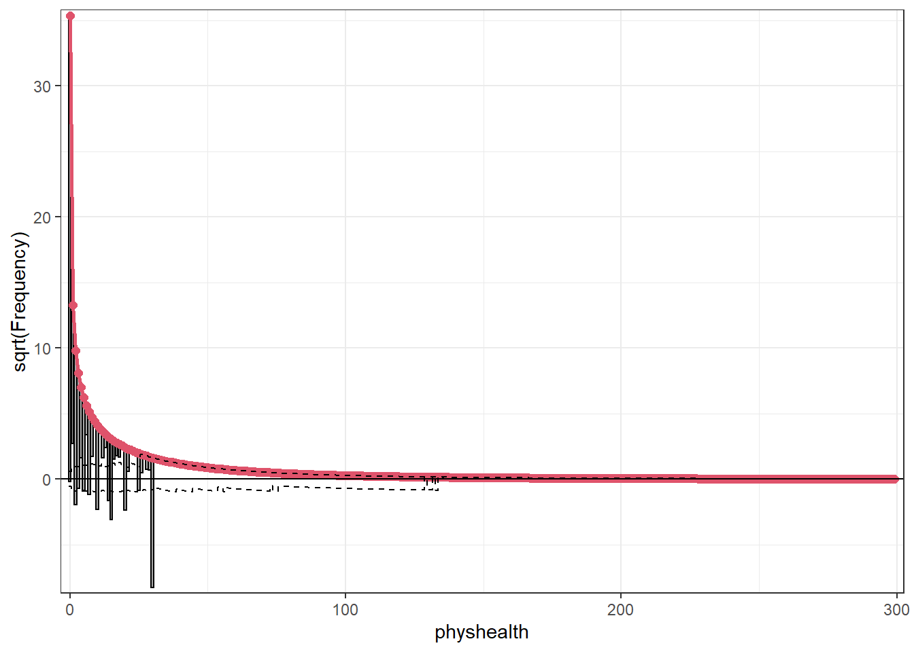

knitr::opts_chunk$set(comment = NA)
library(broom)
library(boot)
library(countreg)
library(topmodels)
library(MASS)
library(tidyverse)
theme_set(theme_bw())25 Negative Binomial Models for Count Data
We will continue to use a count outcome (# of poor physical health days out of the last 30) in OHIO SMART data created in Chapter 6 to demonstrate regression models for count outcomes, as we did in Chapter 24.
Methods discussed in the chapter include:
- Negative Binomial Regression
25.1 R Setup Used Here
25.2 Data Load and Subset Creation
smart_oh <- readRDS("data/smart_ohio.Rds")As in Chapter 24, we’ll create a subset of these data for analysis.
ohioA <- smart_oh |>
select(SEQNO, mmsa_name, genhealth, physhealth,
menthealth, healthplan, costprob,
agegroup, female, incomegroup, bmi, smoke100,
alcdays) |>
drop_na()
ohioA_young <- ohioA |>
filter(agegroup %in% c("18-24", "25-29", "30-34",
"35-39", "40-44", "45-49")) |>
droplevels() |>
mutate(bmi_c = bmi - mean(bmi))25.3 Setup for this Chapter
Again, we’re going to predict physhealth using bmi_c and smoke100.
- Remember that
physhealthis a count of the number of poor physical health days in the past 30. - As a result,
physhealthis restricted to taking values between 0 and 30.
In this chapter, we demonstrate Negative binomial regression, which (like Poisson regression discussed in Chapter 24) is also used for counts and adjusts for overdispersion.
25.3.1 What Will We Demonstrate?
With this new approach, we will again fit the model and specify procedures for doing so in R. Then we will:
- Specify the fitted model equation
- Interpret the model’s coefficient estimates and 95% confidence intervals around those estimates.
- Perform a test of whether each variable adds value to the model, when the other one is already included.
- Store the fitted values and appropriate residuals for each model.
- Summarize the model’s apparent \(R^2\) value, the proportion of variation explained, and the model log likelihood.
- Perform checks of model assumptions as appropriate.
- Describe how predictions would be made for two new subjects.
- Harry has a BMI that is 10 kg/m2 higher than the average across all respondents and has smoked more than 100 cigarettes in his life.
- Sally has a BMI that is 5 kg/m2 less than the average across all respondents and has not smoked more than 100 cigarettes in her life.
In addition, for some of the new models, we provide a little of the mathematical background, and point to other resources you can use to learn more about the model.
25.3.2 Extra Data File for Harry and Sally
To make our lives a little easier, I’ll create a little tibble containing the necessary data for Harry and Sally.
hs_data <- tibble(subj = c("Harry", "Sally"),
bmi_c = c(10, -5),
smoke100 = c(1, 0))
hs_data# A tibble: 2 × 3
subj bmi_c smoke100
<chr> <dbl> <dbl>
1 Harry 10 1
2 Sally -5 025.3.3 Our Poisson Model (for comparison)
mod_poiss1 <- glm(physhealth ~ bmi_c + smoke100,
family = poisson(),
data = ohioA_young)25.4 Negative Binomial Model
Another approach to dealing with overdispersion is to fit a negative binomial model1 to predict the log(physhealth) counts. This involves the fitting of an additional parameter, \(\theta\). That’s our dispersion parameter2
Sometimes, people will fit a model where \(\theta\) is known, for instance a geometric model (where \(\theta\) = 1), and then this can be directly plugged into a glm() fit, but the more common scenario is that we are going to iteratively estimate the \(\beta\) coefficients and \(\theta\). To do this, I’ll use the glm.nb function from the MASS package.
mod_nb1 <- glm.nb(physhealth ~ bmi_c + smoke100, link = log,
data = ohioA_young)
summary(mod_nb1)
Call:
glm.nb(formula = physhealth ~ bmi_c + smoke100, data = ohioA_young,
link = log, init.theta = 0.1487673114)
Coefficients:
Estimate Std. Error z value Pr(>|z|)
(Intercept) 0.874530 0.078994 11.071 < 2e-16 ***
bmi_c 0.035712 0.008317 4.294 1.76e-05 ***
smoke100 0.596396 0.121166 4.922 8.56e-07 ***
---
Signif. codes: 0 '***' 0.001 '**' 0.01 '*' 0.05 '.' 0.1 ' ' 1
(Dispersion parameter for Negative Binomial(0.1488) family taken to be 1)
Null deviance: 1468.1 on 1973 degrees of freedom
Residual deviance: 1422.6 on 1971 degrees of freedom
AIC: 6976.6
Number of Fisher Scoring iterations: 1
Theta: 0.14877
Std. Err.: 0.00705
2 x log-likelihood: -6968.55300 confint(mod_nb1)Waiting for profiling to be done... 2.5 % 97.5 %
(Intercept) 0.72304817 1.03304660
bmi_c 0.02072601 0.05124925
smoke100 0.35977590 0.8358467325.4.1 The Fitted Equation
The form of the model equation for a negative binomial regression is the same as that for Poisson regression.
log(physhealth) = 0.87 + 0.036 bmi_c + 0.60 smoke10025.4.2 Comparison with the (raw) Poisson model
To compare the negative binomial model to the Poisson model (without the overdispersion) we can use the logLik function to make a comparison. Note that the Poisson model is a subset of the negative binomial.
logLik(mod_nb1)'log Lik.' -3484.277 (df=4)logLik(mod_poiss1)'log Lik.' -10819.6 (df=3)2 * (logLik(mod_nb1) - logLik(mod_poiss1))'log Lik.' 14670.65 (df=4)pchisq(2 * (logLik(mod_nb1) - logLik(mod_poiss1)), df = 1, lower.tail = FALSE)'log Lik.' 0 (df=4)Here, the difference in the log likelihoods is large enough that the resulting p value is very small. This strongly suggests that the negative binomial model, which adds the dispersion parameter, is more appropriate than the raw Poisson model.
However, both the regression coefficients and the standard errors are rather similar to the quasi-Poisson and the sandwich-adjusted Poisson results above. Thus, in terms of predicted means, all three models give very similar results; the associated Wald tests also lead to the same conclusions.
25.4.3 Interpreting the Coefficients
There’s only a small change here from the Poisson models we saw previously.
- The constant term, 0.87, gives us the intercept of the regression - the prediction if
smoke100 = 0andbmi_c = 0. In this case, because we’ve centered BMI, it implies thatexp(0.87)= 2.39 is the predicted days of poorphyshealthfor a non-smoker with average BMI. - The coefficient of
bmi_c, 0.036, is the expected difference in count of poorphyshealthdays (on the log scale) for each additional kg/m2 of body mass index. The expected multiplicative increase is \(e^{0.036}\) = 1.037, corresponding to a 3.7% difference in the count. - The coefficient of
smoke100, 0.60, tells us that the predictive difference between those who have and who have not smoked 100 cigarettes can be found by multiplying thephyshealthcount by exp(0.6) = 1.82, yielding essentially an 82% increase of thephyshealthcount.
25.4.4 Interpretation of Coefficients in terms of IRRs
We might be interested in looking at incident rate ratios rather than coefficients. The coefficients have an additive effect in the log(y) scale, and the IRR have a multiplicative effect in the y scale. To do this, we can exponentiate our model coefficients. This also applies to the confidence intervals.
exp(coef(mod_nb1))(Intercept) bmi_c smoke100
2.397748 1.036357 1.815563 exp(confint(mod_nb1))Waiting for profiling to be done... 2.5 % 97.5 %
(Intercept) 2.060705 2.809613
bmi_c 1.020942 1.052585
smoke100 1.433008 2.306766As an example, then, the incident rate for smoke100 = 1 is 1.82 times the incident rate of physhealth days for the reference group (smoke100 = 0). The percent change in the incident rate of physhealth is a 3.6% increase for every kg/m2 increase in centered bmi.
25.4.5 Testing the Predictors
Again, we can use the Wald tests (z tests) provided with the negative binomial regression output.
As an alternative, we probably should not use the standard anova process, because the models there don’t re-estimate \(\theta\) for each new model, as the warning message below indicates.
anova(mod_nb1)Warning in anova.negbin(mod_nb1): tests made without re-estimating 'theta'Analysis of Deviance Table
Model: Negative Binomial(0.1488), link: log
Response: physhealth
Terms added sequentially (first to last)
Df Deviance Resid. Df Resid. Dev Pr(>Chi)
NULL 1973 1468.0
bmi_c 1 20.837 1972 1447.2 5.001e-06 ***
smoke100 1 24.584 1971 1422.6 7.115e-07 ***
---
Signif. codes: 0 '***' 0.001 '**' 0.01 '*' 0.05 '.' 0.1 ' ' 1So, instead, if we want, for instance to assess the significance of bmi_c, after smoke100 is already included in the model, we fit both models (with and without bmi_c) and then compare those models with a likelihood ratio test.
mod_nb1_without_bmi <- glm.nb(physhealth ~ smoke100,
link = log,
data = ohioA_young)
anova(mod_nb1, mod_nb1_without_bmi)Likelihood ratio tests of Negative Binomial Models
Response: physhealth
Model theta Resid. df 2 x log-lik. Test df LR stat.
1 smoke100 0.1452219 1972 -6991.195
2 bmi_c + smoke100 0.1487673 1971 -6968.553 1 vs 2 1 22.6421
Pr(Chi)
1
2 1.951615e-06And we could compare the negative binomial models with and without smoke100 in a similar way.
mod_nb1_without_smoke <- glm.nb(physhealth ~ bmi_c,
link = log,
data = ohioA_young)
anova(mod_nb1, mod_nb1_without_smoke)Likelihood ratio tests of Negative Binomial Models
Response: physhealth
Model theta Resid. df 2 x log-lik. Test df LR stat.
1 bmi_c 0.1449966 1972 -6992.839
2 bmi_c + smoke100 0.1487673 1971 -6968.553 1 vs 2 1 24.28569
Pr(Chi)
1
2 8.305388e-0725.4.6 Store fitted values and residuals
The broom package works in this case, too. We’ll look here at predicted (fitted) values on the scale of our physhealth response.
sm_nb1 <- augment(mod_nb1, ohioA_young,
type.predict = "response")Warning: The `augment()` method for objects of class `negbin` is not maintained by the broom team, and is only supported through the `glm` tidier method. Please be cautious in interpreting and reporting broom output.
This warning is displayed once per session.sm_nb1 |>
select(physhealth, .fitted) |>
head()# A tibble: 6 × 2
physhealth .fitted
<dbl> <dbl>
1 0 2.15
2 0 2.22
3 0 3.18
4 30 5.23
5 0 3.24
6 0 3.7825.4.7 Rootogram for Negative Binomial model
Here’s the rootogram for the negative binomial model.
rootogram(mod_nb1, max = 30)
Again, the red curved line is the theoretical (negative binomial) fit. “Hanging” from each point on the red line is a bar, the height of which represents the difference between expected and observed counts. A bar hanging below 0 indicates underfitting. A bar hanging above 0 indicates overfitting. The counts have been transformed with a square root transformation to prevent smaller counts from getting obscured and overwhelmed by larger counts.
The match looks much better than the Poisson model, which is a sign that accounting for overdispersion is very important. Even this model badly underfits the number of 30 values, however.
25.4.8 Simulating what the Negative Binomial model predicts
We can use the parameters of the negative binomial model to simulate data3 and compare the simulated results to our observed physhealth data.
par(mfrow=c(1,2))
ohioA_young$physhealth |>
table() |> barplot(main = "Observed physhealth")
set.seed(432122)
rnbinom(n = nrow(ohioA_young),
size = mod_nb1$theta,
mu = exp(coef(mod_nb1)[1])) |>
table() |> barplot(main = "Simulated physhealth")Again we see that the simulated data badly underfits the 30 values, and includes some predictions larger than 30.
25.4.9 Specify the \(R^2\) and log(likelihood) values
We can calculate the \(R^2\) as the squared correlation of the fitted values and the observed values.
# The correlation of observed and fitted values
(nb_r <- with(sm_nb1, cor(physhealth, .fitted)))[1] 0.183675# R-square
nb_r^2[1] 0.03373649The glance function in the broom package gives us model log(likelihood), among other summaries.
glance(mod_nb1) |> round(3)# A tibble: 1 × 8
null.deviance df.null logLik AIC BIC deviance df.residual nobs
<dbl> <dbl> <logLik> <dbl> <dbl> <dbl> <dbl> <dbl>
1 1468. 1973 -3484.277 6977. 6999. 1423. 1971 1974Here, we have
| Model | Scale | \(R^2\) | log(likelihood) |
|---|---|---|---|
| Negative Binomial | log(physhealth) |
.034 | -3484.27 |
25.4.10 Check model assumptions
Here is a plot of residuals vs. fitted values on the original physhealth scale.
ggplot(sm_nb1, aes(x = .fitted, y = .resid)) +
geom_point() +
labs(title = "Residuals vs. Fitted `physhealth`",
subtitle = "Negative Binomial Regression model")Here are the glm diagnostic plots from the boot package.
glm.diag.plots(mod_nb1)From the lower left plot, we see fewer points with large values of both Cook’s distance and leverage, so that’s a step in the right direction. The upper right plot still has some issues, but we’re closer to a desirable result there, too.
25.4.11 Predictions for Harry and Sally
The predictions from this negative binomial regression model will be only a little different than those from the Poisson models.
predict(mod_nb1, newdata = hs_data, se.fit = TRUE,
type = "response")$fit
1 2
6.221696 2.005657
$se.fit
1 2
0.7537535 0.1773595
$residual.scale
[1] 1As we’ve seen in the past, when we use response as the type, the predictions fall on the original physhealth scale. The prediction for Harry is 6.2 days, and for Sally is 2.0 days.
25.5 The Problem: Too Few Zeros
Remember that we observe more than 1000 zeros in our physhealth data.
ohioA_young |> count(physhealth == 0)# A tibble: 2 × 2
`physhealth == 0` n
<lgl> <int>
1 FALSE 710
2 TRUE 1264Let’s go back to our Poisson model (without overdispersion) for a moment, and concentrate on the zero values.
# predict expected mean physhealth for each subject
mu <- predict(mod_poiss1, type = "response")
# sum the probabilities of a zero count for each mean
exp <- sum(dpois(x = 0, lambda = mu))
# predicted number of zeros from Poisson model
round(exp)[1] 124As we’ve seen previously, we’re severely underfitting zero counts. We can compare the observed number of zero physhealth results to the expected number of zero values from the likelihood-based models.
round(c("Obs" = sum(ohioA_young$physhealth == 0),
"Poisson" = sum(dpois(0, fitted(mod_poiss1))),
"NB" = sum(dnbinom(0, mu = fitted(mod_nb1), size = mod_nb1$theta))),0) Obs Poisson NB
1264 124 1250 There are at least two ways to tackle this problem.
- Fitting a model which deliberately inflates the number of zeros that are fitted
- Fitting a hurdle model
We’ll look at those options, next.
See https://cran.r-project.org/web/packages/pscl/vignettes/countreg.pdf for more details.↩︎
This \(\theta\) is the inverse of the dispersion parameter estimated for these models by most other software packages, like SAS, Stata and SPSS. See https://stats.idre.ucla.edu/r/dae/negative-binomial-regression/ for more details.↩︎
See http://data.library.virginia.edu/getting-started-with-negative-binomial-regression-modeling/↩︎